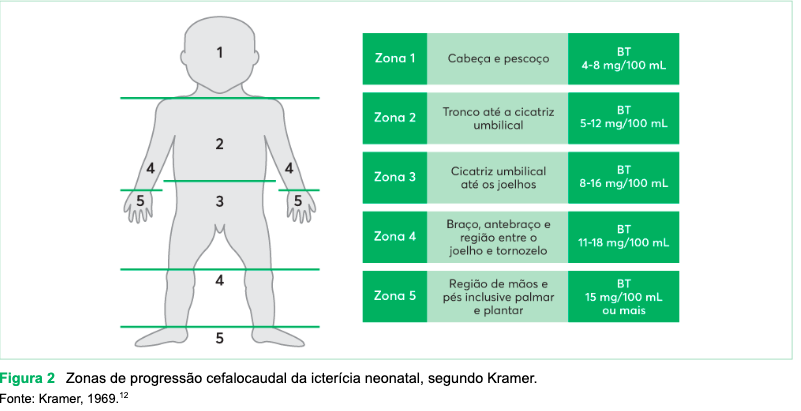
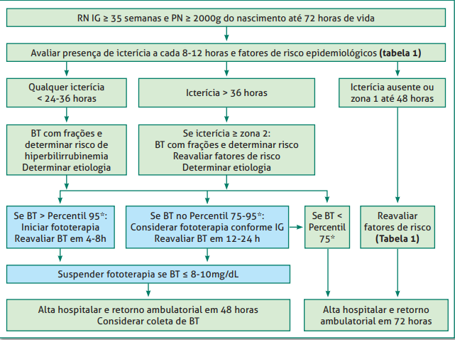
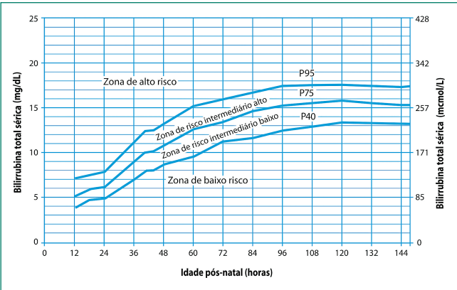

Icterícia Neonatal
Definição
Coloração amarelada da pele, escleras e mucosas por depósito de bilirrubina quando BI ≥ 5 mg/dL. Ocorre em 60% dos RN a termo e 80% dos pré-termos na 1ª semana de vida.
Objetivo: detectar precocemente quem corre risco de kernicterus (impregnação de BI nos núcleos da base = encefalopatia bilirrubínica aguda)
Fisiológica × Patológica — Critérios Diagnósticos
| Fisiológica | Patológica | |
|---|---|---|
| Aparecimento | Após 24 horas de vida | Antes de 24 horas de vida (SEMPRE patológica) |
| BT pico | ~12 mg/dL entre 3–4 dias | BT >12 mg/dL qualquer momento |
| Duração | <7 dias (RNT) / <14 dias (RNPT) | >7 dias (RNT) ou >14 dias (RNPT) → colestase? |
| Progressão | Crânio → caudal (zonas de Kramer) | Rápida, com zonas de Kramer ≥4 |
| BD | BD ≤1 mg/dL | BD >1 mg/dL = sempre patológico |
⚠️ Icterícia antes de 24h = PATOLÓGICA. Ponto final. Investigar causa.
Zonas de Kramer — Estimativa Clínica da BT

| Zona | Região Corporal | BT Estimada |
|---|---|---|
| 1 | Face e pescoço | ~5 mg/dL |
| 2 | Tronco até o umbigo | ~9 mg/dL |
| 3 | Umbigo até os joelhos | ~11–12 mg/dL |
| 4 | Joelhos até tornozelos | ~15 mg/dL |
| 5 | Palmas e plantas | >15 mg/dL |
Kramer é triagem clínica — sempre confirmar com bilirrubina sérica ou transcutânea
Metabolismo da Bilirrubina — Resumo
- Hemólise das hemácias → bilirrubina indireta (BI) não conjugada
- Transporte pelo plasma ligada à albumina
- Captação pelo hepatócito → conjugação pela glucuronil transferase → bilirrubina direta (BD)
- Excreção biliar → intestino → eliminação nas fezes e urina
O RN produz 2–3× mais bilirrubina que o adulto (mais Hb, menor vida média das hemácias 70–90 dias, imaturidade enzimática)
Fatores de Risco para Hiperbilirrubinemia Significante (>17 mg/dL)
- Icterícia nas primeiras 24–36h de vida
- Incompatibilidade RH, ABO ou antígenos irregulares
- IG 35–37 semanas (pré-termo tardio)
- Clampeamento do cordão >60 seg (policitemia)
- Aleitamento com dificuldade ou perda de peso >7%
- Irmão que precisou de fototerapia
- Cefalohematoma ou equimoses
- Descendência asiática
- Sexo masculino
- BT na zona alta antes da alta hospitalar
Causas de Hiperbilirrubinemia Indireta
| Mecanismo | Exemplos |
|---|---|
| Hemólise imune | Incompatibilidade ABO (mais comum) / RH (mais grave) |
| Hemólise hereditária | Esferocitose, G6PD, alfa-talassemia |
| Coleções sanguíneas extravasculares | Cefalohematoma, equimoses, hemorragia intracraniana |
| Policitemia | PIG, filho de mãe diabética, clampeamento tardio |
| Deficiência de conjugação | Síndrome de Crigler-Najjar, síndrome de Gilbert |
| Aumento da circulação êntero-hepática | Aleitamento insuficiente, jejum, obstrução GI |
| Icterícia por leite materno | Diagnóstico de exclusão (ver abaixo) |
Incompatibilidade ABO vs RH
| ABO | RH | |
|---|---|---|
| Mecanismo | Mãe tipo O + RN tipo A ou B | Mãe RH− + RN RH+ |
| Frequência | Mais comum | Menos comum, mais grave |
| Coombs direto | +/− (20–40%) | Geralmente positivo |
| Hemólise | Moderada | Intensa (anemia fetal, hidropsia) |
| Ocorrência | Qualquer gestação | Gestações subsequentes (sensibilização) |
| Prevenção | — | Imunoglobulina anti-D (RhIG) na mãe |
Icterícia por Leite Materno × Icterícia do Aleitamento
| Icterícia por Leite Materno | Icterícia do Aleitamento | |
|---|---|---|
| Causa | Substâncias no leite inibem conjugação | Baixa oferta láctea → aumento circulação êntero-hepática |
| Ganho de peso | Normal | Baixo / perda >10% |
| Início | 1ª semana, pode persistir até 3 meses | 3–5 dias de vida |
| Diagnóstico | Exclusão | Clínico + peso |
| Conduta | NÃO interromper o AME | Rever técnica da amamentação, aumentar oferta |
⚠️ NUNCA suspender o aleitamento materno por suspeita de icterícia por leite materno
Nomograma de Bhutani — Quando Fototerapia?


| BT | Zona Bhutani | Risco de BT >17,5 | Conduta |
|---|---|---|---|
| >P95 | Alta | 40% | Fototerapia independente dos fatores de risco |
| P75–95 | Intermediária alta | 13% | Fototerapia se fatores de risco presentes |
| P40–75 | Intermediária baixa | 2% | Alta com retorno <1 semana |
| Baixa | Mínimo | Alta | |
Tratamento
Fototerapia
- Mecanismo: luz azul (comprimento de onda 430–490 nm) → fotoisomerização da BI → excreção pela bile e urina sem conjugação
- Técnica: RN somente com fralda + óculos de proteção; maximizar exposição da superfície corpórea
- Suspender quando BT cair para zona abaixo do P75
Exsanguineotransfusão (EST)
- Indicada quando fototerapia intensiva falha ou BT em zona de risco de kernicterus
- Procedimento invasivo com alta morbidade; realizar em UTI neonatal
Hiperbilirrubinemia Direta (BD >1 mg/dL)
SEMPRE patológica — indica doença hepática ou biliar
Sinais clínicos: icterícia com tom esverdeado/amarelo-acastanhado, colúria, acolia/hipocolia fecal, prurido
Principal causa: Atresia Biliar
- Ausência/obliteração dos ductos biliares extra-hepáticos
- 25% das colestases neonatais
- Principal indicação de transplante hepático em crianças
- Manifestação: icterícia progressiva + fezes claras nas primeiras 8 semanas
- Tratamento: Cirurgia de Kasai antes dos 30 dias de vida (portoenterostomia)
- Icterícia >14 dias → investigar colestase neonatal (BD + GGT)
Perguntas que o Professor Provavelmente Vai Fazer
- Icterícia nas primeiras 24h — o que fazer? → Sempre patológica; dosar BT urgente; investigar hemólise (Coombs, incompatibilidade ABO/RH)
- Quando NÃO interromper o aleitamento materno? → Icterícia por leite materno (diagnóstico de exclusão)
- Diferença entre icterícia por leite materno e do aleitamento? → Leite materno: boa oferta, peso normal; Aleitamento: baixa oferta, perda de peso
- Quando indicar fototerapia? → Bhutani >P95 sempre; >P75 se fatores de risco
- O que é atresia biliar e como tratar? → Cirurgia de Kasai antes dos 30 dias; principal indicação de TX hepático em crianças
Alertas OSCE ⚠️
- Icterícia antes de 24h = SEMPRE patológica
- BD >1 mg/dL = SEMPRE patológico (colestase) — investigar imediatamente
- Icterícia prolongada >14 dias → dosar BD para afastar colestase
- Kramer é clínica — sempre confirmar com BT sérica antes de decisão terapêutica
- Zonas 1–2 de Kramer podem ser fisiológicas; zonas 4–5 = urgência
- Icterícia por leite materno: nunca suspender amamentação
Fonte
- Gerado a partir de:
conteudo_ictericia.md(Aula 12 + Caso Prático Icterícia) - Seções consultadas: fisiológica vs patológica, metabolismo, zonas de Kramer, ABO vs RH, nomograma Bhutani, fototerapia, atresia biliar, colestase
- Gaps identificados: nomograma de Bhutani só com percentis, sem curva visual — complementado com limiares de decisão baseados no Bhutani original (SBP/AAP)